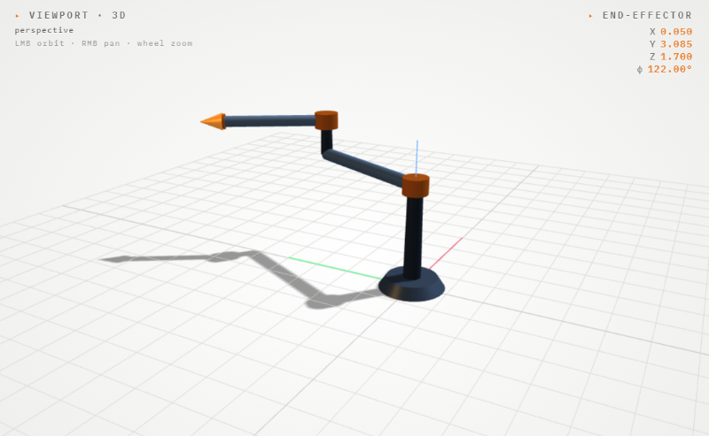
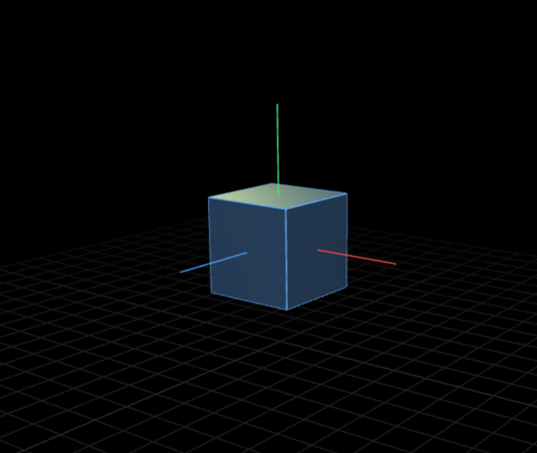
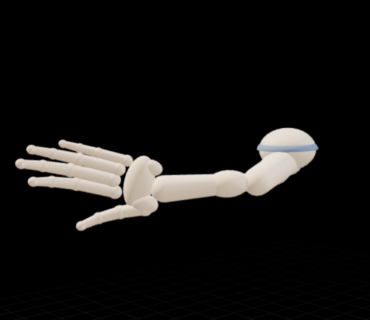
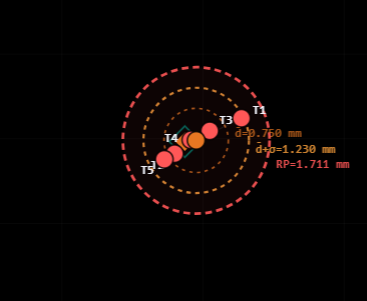
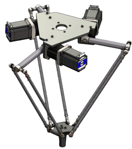

S—01
Robotics
2 DOF Arm Simulator
Forward and inverse kinematics of a 2-axis planar arm. Adjust DH parameters, drag the target, and watch the arm solve in real time.

S—02
Robotics
DOF Explorer
Toggle degrees of freedom on a 3D object and see exactly what each DOF means. Includes real-world presets, door, drone, robot arm.

S—03
Robotics
Human Arm & Hand DOF
26-DOF interactive hand model. Pose each joint individually or apply presets, fist, pinch, wave. See how biological DOF compares to robots.

S—04
Robotics
Accuracy & Repeatability
Enter measured trial positions for a 2-DOF arm and compute ISO 9283 accuracy and repeatability. Scatter plot and bar chart generated live.

S—05
Robotics
Delta Robot Simulator
A 3-arm parallel delta. Configure base, arm and platform sizes, drive the motors, and solve targets in 3D.
S—06
Robotics
Linear Delta Simulator
A 3-tower linear delta (Rostock-style). Slide the carriages up and down, solve targets, and trace paths through the prismatic workspace.
S—07
ROS2
ROS2 Navigation Simulator
Simulate SLAM, path planning and obstacle avoidance for an AMR.
S—08
ROS2
6 DOF Arm Simulator
Model and control a 6-axis industrial arm with trajectory planning.
S—09
Physics
RLC Circuit Simulator
Explore impedance, resonance, and phase response interactively.
Note
Simulators are companion tools to Orca workshops. Students use them during sessions to verify real-world builds.
See Workshops →